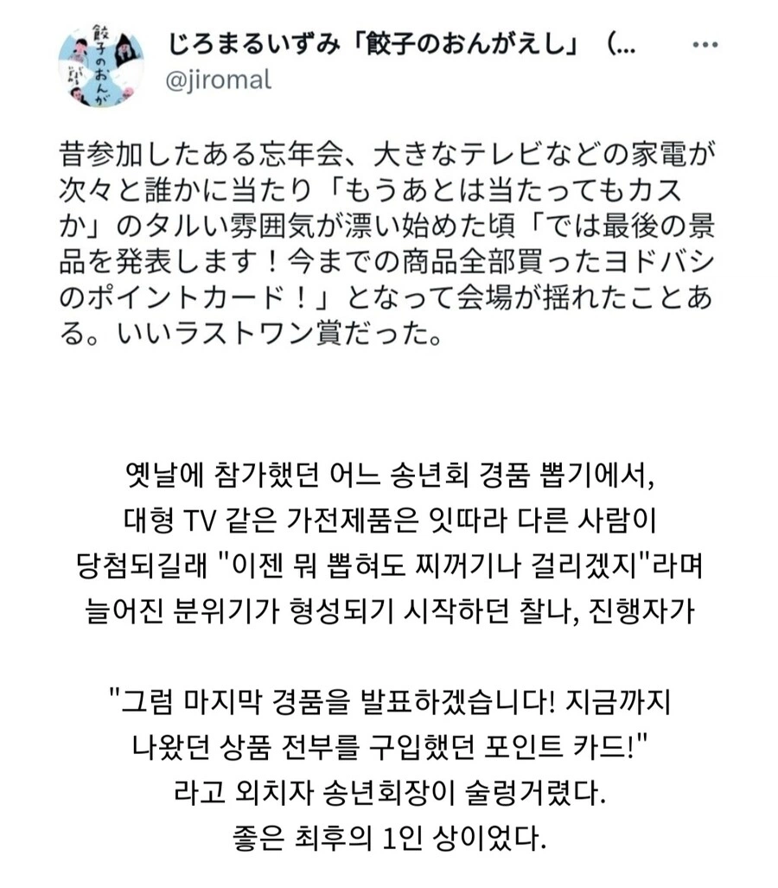

전부 구입해서 잔액은 없습니다
포인트가 중요한거지
그치. 포인트가 중요하지. "지금까지 나왔던 상품 전부를 구입하고 포인트 잔액 0인 포인트 카드"는 중요하지 않지.
너 ai냐?
너, 정말 핵심을 찔렀어
응기잇
빅카메라나 요도바시가 10프로 적립일껄 구매금액이 2천만원만 되도 포인트로 2백만원임
본문글 이해 못했는데 ㄳ
와...포인트 우습게볼게아니구만;
뭐지.. ai임? 존나 멍청한 댓글이네;
다이소에서 구입했기 때문에 구입금액의 0.1% 적립되셨습니다
요도바시는 보통 10%씩 포인트 넣어주니까 어쩌면 저게 더 알짜일수도ㅋㅋㅋ
와리바시
요도바시 10퍼나 넣어줌? 개쩌네
요도....요?
잔액 0원 카드 받고도 박수 쳐야 하는 송년회면 사회생활 만렘이다 ㅋㅋ
진행자가 뭘 좀 아는구만 ㅋㅋㅋㅋ
적립이 좀 되는 카드 인가 보구만
적립 많이 되나 보네 ㅋㅋ
오 얼마나 되려나
옛날옛날에 학교 축제에 사회자로 온 김제동이 경품 추첨 이거 당첨된 사람들이나 재밌지 보는 우리는 진짜 재미 없다면서 핸드폰에서 충전기를 빼서 따로 추첨해서 줬음ㅋㅋ 그러면서 당첨자들끼리 알아서 가지라고ㅋㅋ
뭔소리임
옛날에는 핸드폰에서 배터리가 분리되었었는데
경품상품의 핸드폰을 통으로 당첨자에게 주지않고 배터리를 분리해서 다른사람에게 지급했다는 뜻
그래서 핸드폰 본체받은사람과 배터리받은 사람의 실랑이 보는 컨텐츠를 만들었다는 뜻
아 충전기라고해서 뭔말인지 몰랐네 배터리라고 했어야지.. 설명 ㄳㄳ
그보다 더 옛날에 핸드폰마다 충전기가 다르던 시절 이야기임.......
아??
어..??
어르신 인사 올립니다 항상 건강하시길 바랍니다
그새끼는 진짜 개 병@신 같은짓거리를 진작에 하고 다녔네
그 때는 웃겼어ㅋㅋ 대학 축제 사회자로 최고점 찍을 때였다
ㅋㅋㅋ 저건 얼마일지 궁금해서라도 열심히 하고 싶어지는데
술렁술렁 자와자와
웅성웅성
방금 사은품 받은 사람들의 상품 빼앗기 1회권
캐쉬가 개 쩔긴 하지 ㅋㅋ